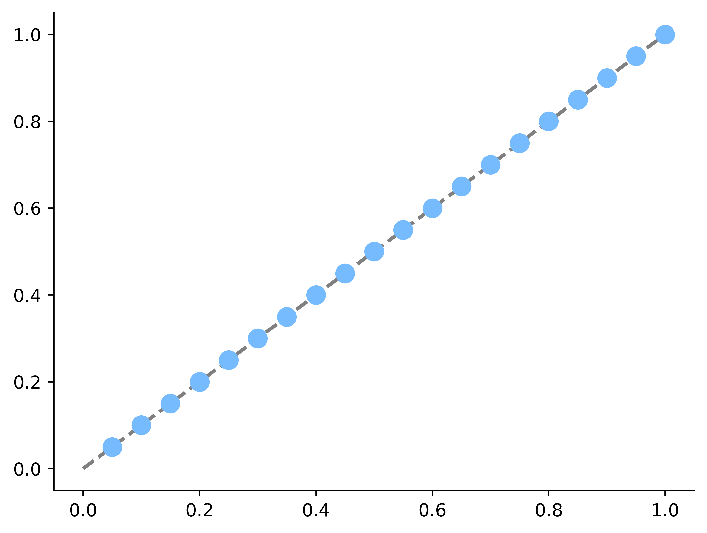
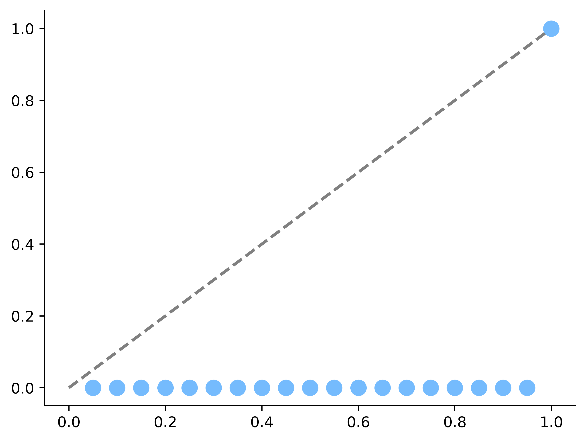
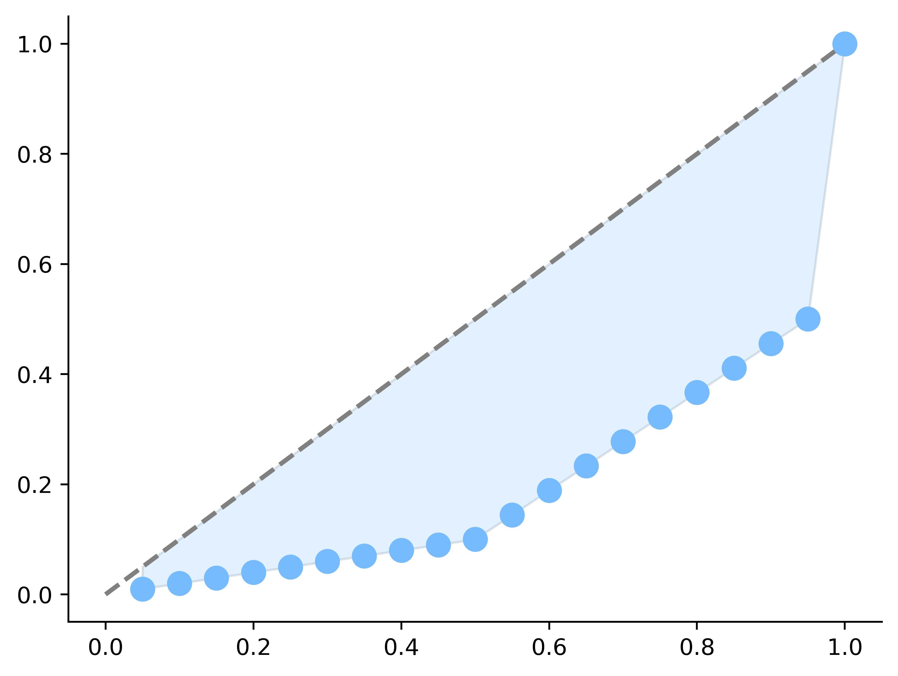
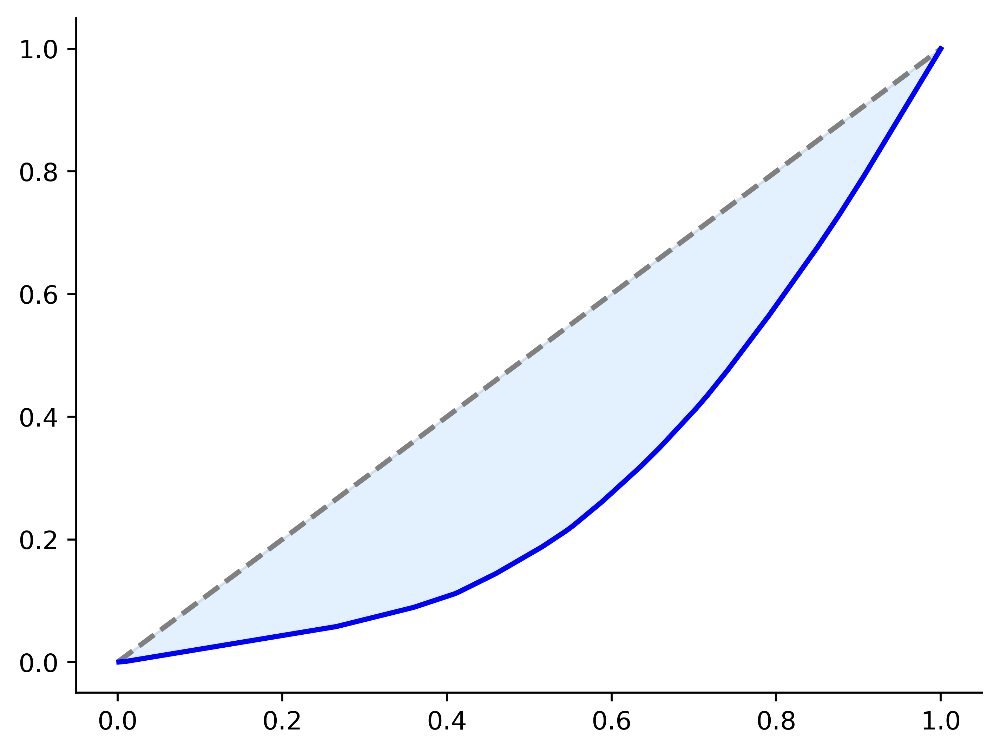

6.5. Indici di concentrazione#
In presenza di variabili che rappresentano beni condivisibili in una popolazione, come per esempio la ricchezza, ci si può chiedere quanto la variabile sia equamente distribuita tra gli individui della popolazione, oppure quanto sia concentrata solo su un numero ridotto di osservazioni. Questo concetto è diverso dalla varianza, che misura la dispersione dei valori intorno a un valore medio.
Date \(n\) osservazioni, indichiamo con \(a_1, \dots, a_n\) il loro elenco una volta che queste sono state ordinate. Successivamente calcoliamone il valore medio
e sommiamole, ottenendo \(\mathrm{TOT} = n \bar a = \sum_{i=1}^n a_i\). Possiamo avere due situazioni estreme:
in caso di concentrazione minima tutti gli elementi del campione assumono lo stesso valore: \(a_1 = a_2 = \dots = a_n = \bar a\);
in caso di concentrazione massima tutti gli elementi del campione assumono il valore \(0\), a parte uno: \(a_1 = a_2 = \dots = a_{n-1} = 0\) e \(a_n = n \bar a\).
In generale allora ci può interessare valutare un indice di concentrazione, che valga \(0\) oppure \(1\) nei casi rispettivamente di concentrazione minima e massima, e che sia negli altri casi sia un valore crescente in funzione della concentrazione. Consideriamo:
la frequenza relativa cumulata fino all'\(i\)-esima osservazione: \(F_i = \frac{i}{n}\), per \(i = 1, \dots, n\), e
la quantità relativa cumulata fino all'\(i\)-esima osservazione: \(Q_i = \frac{\sum_{k=1}^i a_k}{\mathrm{TOT}}\).
Si verifica facilmente che
\(0 \leq F_i \leq 1\) e \(0 \leq Q_i \leq 1\);
\(Q_i \leq F_i\) dal momento che le osservazioni sono state ordinate in modo crescente;
\(Q_i = F_i\) nel caso di concentrazione minima;
\(Q_n = F_n\).
Per \(i = 1, \dots,n\) le coppie \((F_i, Q_i)\) indicano che il \(100 F_i \%\) della popolazione detiene il \(100 Q_i \%\) della quantità considerata. Se si considerano i punti sul piano che sono identificati da queste coppie:
nel caso di concentrazione minima tutti i punti \((F_i, Q_i)\) giacciono sulla retta \(F = Q\): possiamo dunque dire che in questo caso \(F_i - Q_i = 0\) per ogni \(i\);
import numpy as np
import matplotlib.pyplot as plt
import pandas as pd
plt.style.use('sds.mplstyle')
heroes = pd.read_csv('data/heroes.csv', sep=';', index_col=0)
tot = 10
n = 20
a = [tot/n] * n
q = np.cumsum(a) / tot
f = np.arange(1, n+1) / n
plt.plot([0, 1], [0, 1], linestyle='--', linewidth=2, c='gray')
plt.plot(f, q, 'o')
plt.show()

nel caso di concentrazione massima i punti \((F_i, Q_i)\) per \(i = 1, \dots, n-1\) giacciono sulla retta \(Q = 0\), tranne l'ultimo per cui \(F_n = Q_n = 1\): dunque in questo caso \(F_i - Q_i = F_i\) per \(i = 1, \dots, n-1\) e \(F_n - Q_n = 0\).
tot = 10
n = 20
a = [0] * (n-1) + [tot]
q = np.cumsum(a) / tot
f = np.arange(1, n+1) / n
plt.plot([0, 1], [0, 1], linestyle='--', linewidth=2, c='gray')
plt.plot(f, q, 'o')
plt.show()

Nei casi intermedi si avrà dunque che i punti staranno su una curva "sotto" la retta \(F = Q\), dato che \(Q_i \leq F_i\), e più tale curva si "allontana" dalla retta, più la concentrazione è alta.
L'area compresa tra la curva dei punti \((F_i, Q_i)\) (detta curva di Lorentz) e la retta di equidistribuzione (la retta a \(45^{\circ}\)) è detta area di concentrazione e può essere utilizzata come base per la definizione di appositi rapporti di concentrazione, di cui l'indice di Gini costituisce un esempio. Maggiore infatti è la concentrazione osservata, maggiore sarà tale area.
tot = 10
n = 20
a = [tot/100]*10 + [tot*4/90]*9 + [tot/2]
q = np.cumsum(a) / tot
f = np.arange(1, n+1) / n
plt.fill_between(f, f, q, alpha=0.2)
plt.plot([0, 1], [0, 1], linestyle='--', linewidth=2, c='gray')
plt.plot(f, q, 'o')
plt.show()

Verifichiamo quale sia la concentrazione dell'attributo Strength, nell'idea di verificare se la forza sia più o meno equamente distribuita tra i supereroi.
strength = heroes[pd.notnull(heroes['Strength'])]['Strength']
Le quantità relative cumulate si ottengono ordinando i valori, calcolando le corrispondenti somme cumulate e dividendole per la "quantità" totale di forza.
Q = strength.sort_values().cumsum() / sum(strength)
Le frequenze relative cumulate sono facili da calcolare: il loro vettore ha come componenti i valori che vanno da \(\frac{1}{n}\) a \(1\), incrementandoli ogni volta di \(\frac{1}{n}\), dove \(n\) indica il numero di valori osservati.
import numpy as np
n = len(strength)
F = np.arange(1, n+1) / n
Pertanto il grafico che mostra l'area di concentrazione è il seguente, in cui a causa dell'elevato numero di osservazioni è più opportuno visualizzare le quantità relative cumulate (i valori di \(Q\)) usando una spezzata piuttosto che un insieme di punti.
plt.fill_between(F, F, Q, alpha=0.2)
plt.plot([0, 1], [0, 1], linestyle='--', linewidth=2, c='gray')
plt.plot(F, Q, linewidth=2, c='blue')
plt.show()

Il risultato evidenzia una distribuzione della forza relativamente vicina alla situazione di concentrazione minima.
I diagrammi come quello appena ottenuto devono essere analizzati qualitativamente, mentre spesso è più comodo avere un indice numerico calcolato a partire dai dati, il cui valore possa facilmente essere confrontato con due estremi minimo e massino. In tal senso si definisce indice di concentrazione (o coefficiente) di Gini il rapporto
tra la quantità \(\sum_{i=1}^{n-1}F_i - Q_i\) e il suo valore massimo
Per quanto appena visto,
\(0 \leq G \leq 1\), e
\(G = \frac{2}{n-1} \sum_{i=1}^{n-1} F_i - Q_i\)
Siamo ora in grado di calcolare indice di concentrazione di Gini per l'attributo Strength: sottraendo componente per componente il vettore delle quantità cumulate a quello delle frequenze cumulate, sommando i risultati e moltiplicando per \(\frac{2}{n-1}\) si ottiene il valore dell'indice di concentrazione.
2 * sum(F - Q) / (n-1)
0.4118214635457669
In accordo con il grafico precedentemente generato, \(G\) assume un valore intermedio tra i due possibili estremi, a indicare una distribuzione della forza debolmente concentrata su un sottoinsieme dei supereroi.